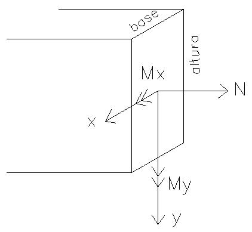

SEÇÃO TRANSVERSAL RETANGULAR:
base (cm):
altura (cm):
ESFORÇOS:
Normal (kgf; + tração):
Momento fletor em torno de x (kgf*cm; + tração inferior):
Momento fletor em torno de y (kgf*cm; + tração atrás):
GERAR PDF
GERAR DESENHO
LIMPAR DESENHO
Seu navegador não suporta canvas do HTML5.